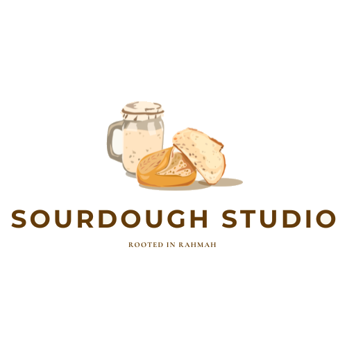

Slow-fermented sourdough, baked in small batches out of my kitchen.
I've kept a sourdough starter alive for years, refining the process one loaf at a time. Sourdough Studio is a small cottage bakery run out of my kitchen in Ellicott City: naturally leavened bread and discard treats, made in small batches and baked to order.
Orders close Friday, with pickup Sunday in Ellicott City.
Pickup only, no delivery.
Reach out to place a Tuesday order, or ask about a custom loaf.
Reserve your order